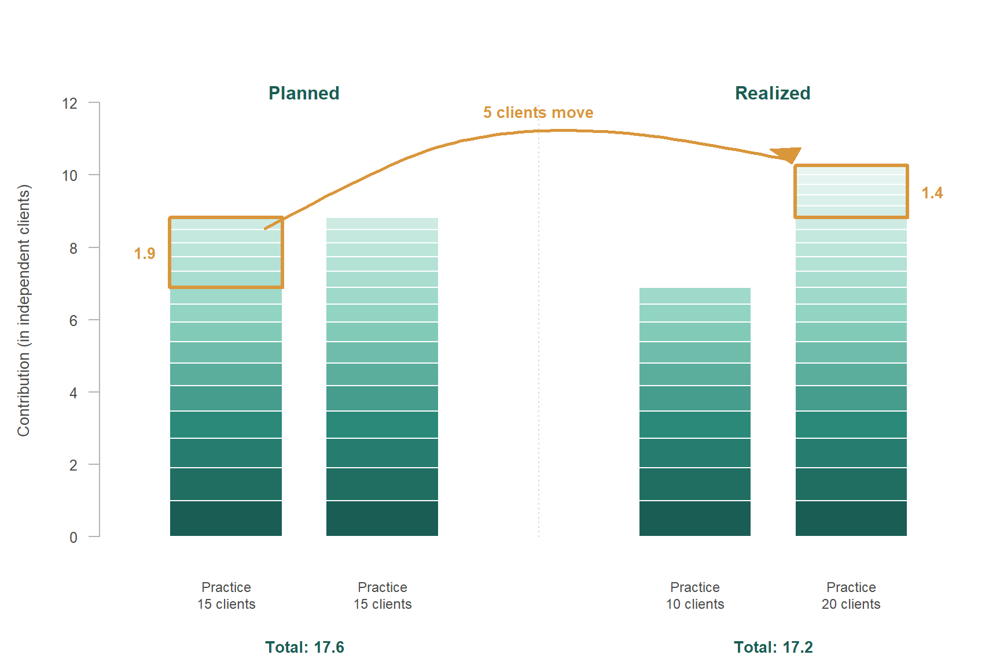
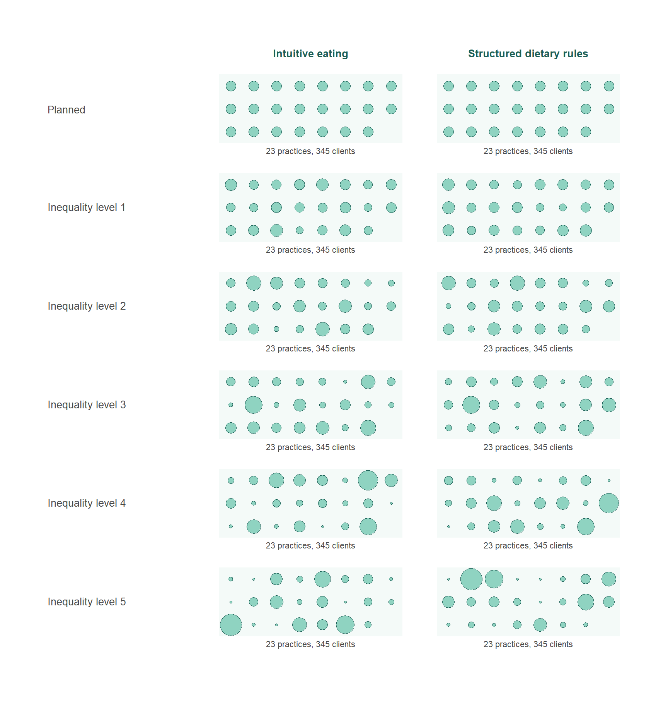
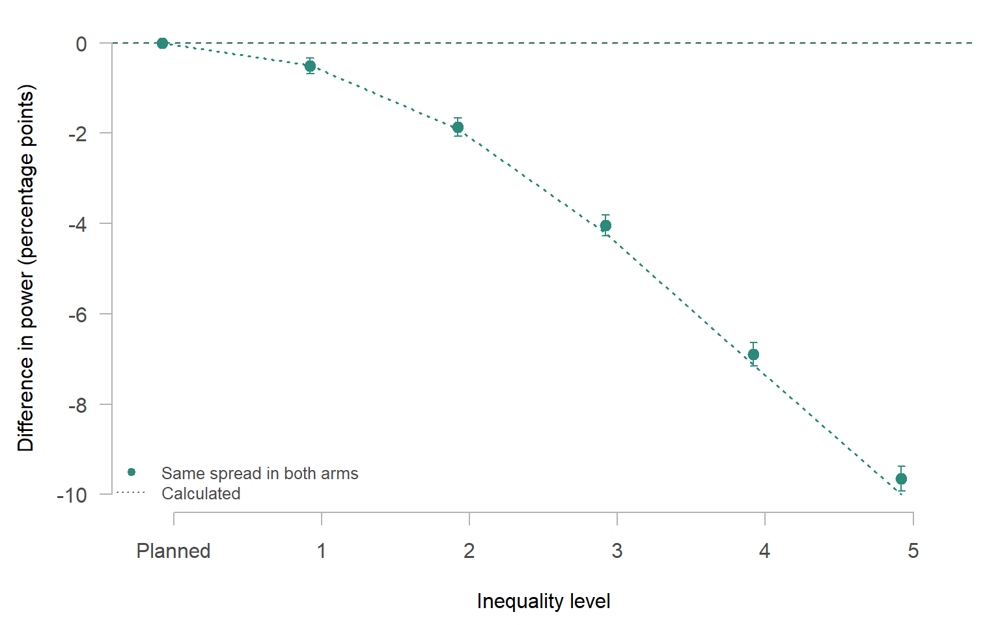
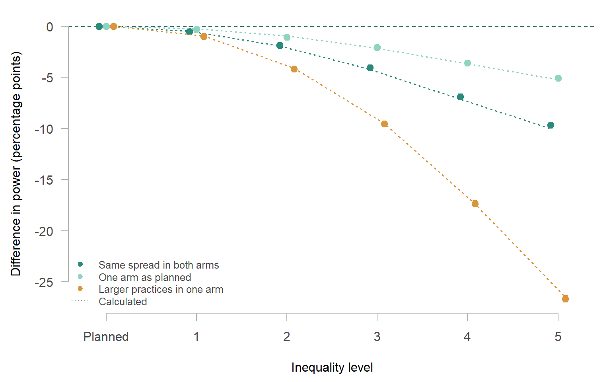
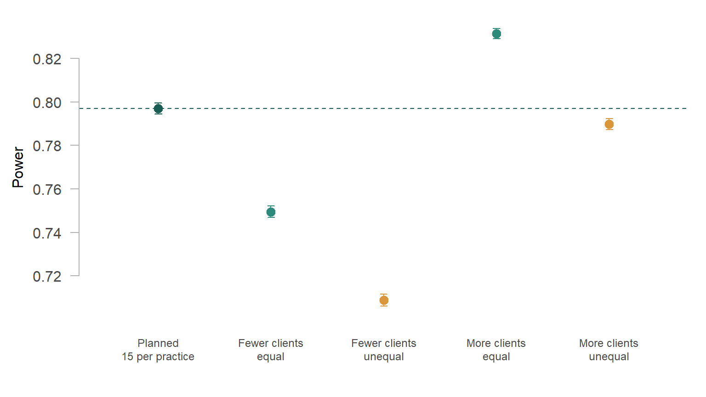
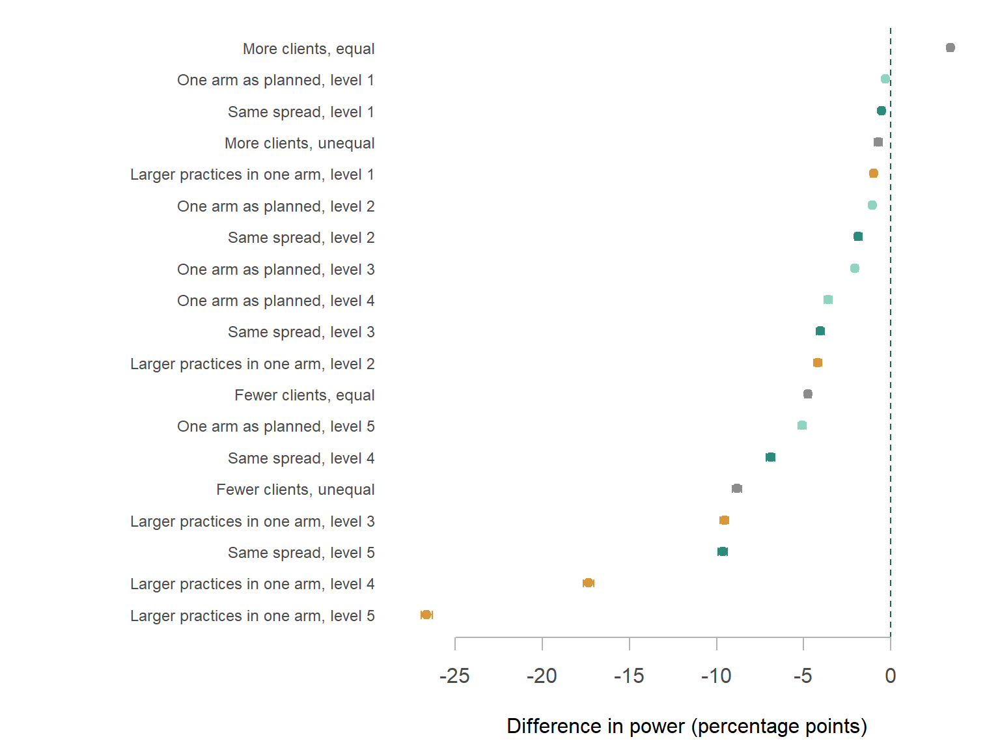

🤔 Your power analysis assumed 15 clients per practice. What happens to the power when some practices recruit 5 clients and others 30?
Before a study starts, the researcher has to decide how many participants to include, aiming to give the study a sufficiently high probability of detecting an effect, if that effect really exists. The researcher sets this probability - the statistical power - in advance, often at 80%. In practice, power analysis is used for this: a calculation based on a series of educated guesses or assumptions about what the data will look like, such as the expected size of the effect. The researcher has to make these assumptions before any data are collected. When those assumptions turn out to be wrong, the study can end up with less power than the researcher intended, and therefore with a larger risk of missing an effect that does exist.
In many studies, the researcher does not recruit participants one by one but through groups. A clinical psychologist recruits clients through psychology practices, an educational researcher recruits pupils through schools, and a medical researcher recruits patients through hospitals. The data from such studies are clustered (or multilevel or nested) data, with the groups being clusters. Clustered data occur in many kinds of studies. This post focuses on trials in which the researcher randomizes whole clusters instead of individual participants. All participants within a cluster then are assigned to the same condition and receive the same intervention or treatment. Such trials are called cluster-randomized trials. Whether the researcher randomizes clusters or individual participants, the clustering has consequences for the power analysis. The researcher then has to make additional assumptions, and one of these assumptions is the subject of this post.
When a researcher plans the sample size for a study with clustered data, the plan always contains an assumption about the number of participants in each cluster, whether the researcher makes that assumption consciously or not. To see why this assumption plays a role, consider what clustering means for a power analysis. Participants within the same cluster tend to resemble each other. Each additional participant from a cluster that is already in the study therefore contributes less than a participant from a new cluster would. A power analysis for such a trial takes this into account. The calculation therefore always assumes how the participants are spread across the clusters, even when the researcher does not choose that spread explicitly.
The simplest choice is to assume that every cluster contributes the same number of participants, usually the number the researcher expects on average. This choice is both convenient and understandable. It is convenient, because the power analysis then needs only one number. It is understandable, because the researcher often does not know in advance which clusters will recruit more and which fewer. But it has a consequence that is easy to overlook. As Part 1 of this series showed, equal clusters give the highest power that can be reached with a given number of participants. A power analysis that assumes equal clusters therefore describes the most favourable way in which the participants could be spread, and the power it reports holds only for that situation. This post examines how far the actual power can end up from the planned power when the clusters turn out to differ in size.
This post illustrates the problem with the running example of the series. A trial compares intuitive eating with structured dietary rules in adults with subclinical eating and body image concerns. Psychology practices are randomized, so all clients within a practice receive the same intervention. If clients were independent, 198 clients per arm would give 80% power to detect a standardized effect of 0.25 with a one-sided α of 0.05. Clients within the same practice tend to resemble each other. The intraclass correlation (ICC) expresses how strongly they resemble each other, as the share of the variation in body image that is due to differences between practices. With an ICC of 0.05, the trial needs more clients than that. A standard power analysis that assumes 15 clients per practice arrives at 23 practices per arm. The rest of this post calls the clusters practices and the participants clients.
NoteRunning example
| Trial | intuitive eating versus structured dietary rules |
| Participants | adults with subclinical eating and body image concerns |
| Outcome | body image |
| Clusters | psychology practices, randomized as a whole |
| Expected effect | standardized difference of 0.25 |
| Significance level | one-sided α = 0.05 |
| Target power | 80% |
| ICC | 0.05 |
| Planned clients per practice | 15 |
| Clients per arm if clients were independent | 198 |
| Design effect | 1 + (15 − 1) × 0.05 = 1.7 |
| Practices per arm | 198 × 1.7 / 15, rounded up: 23 (345 clients per arm) |
Why practice sizes are often hard to predict
A researcher who wants to plan in more detail than with one number for all practices can try to estimate for each practice how many clients it will recruit, but even a careful estimate remains uncertain. For example, the researcher can ask each practice how many eligible clients it sees, how much time its psychologists can spend on the trial, and how many referrals it expects. The researcher can also look at earlier trials in similar settings to see how recruitment was spread across sites. These estimates are made before the trial starts, however, and the circumstances on which they are based change once the trial is running. A practice loses a psychologist, its waiting list becomes longer, eligible clients decline to take part, psychologists find the trial procedures too demanding next to their regular work, a referral route disappears, or the practice withdraws after randomization. Other practices recruit more easily than expected. When the target is a total number of clients, recruitment then tends to continue in those practices until the total is reached. The sizes that result rarely match the sizes that were planned, and it is hard to know in advance how the clients will be spread across the practices.
Unequal practices
Differences in practice size matter because clients do not all receive the same weight in the analysis. A large practice contributes more than a small one, but a practice with twice as many clients does not contribute twice as much. Because clients from the same practice resemble each other, an additional client in a large practice contributes less than an additional client in a small practice. When some practices end up larger and others smaller than planned, the extra clients in the large practices do not fully make up for the clients missing from the small practices. The total number of clients can then be exactly on target, while the power is lower than planned.
To see how much this matters, the simulation compares the planned trial, in which every practice recruits 15 clients, with trials in which the practices increasingly differ in size. In each of these trials, each arm has the planned number of practices and the planned number of clients. Both arms also have the same set of practice sizes, so that the arms differ only in the condition to which they are assigned. The simulation uses five levels of inequality. At the lowest level, the practices recruit between 8 and 23 clients. At the highest level, they recruit between 1 and 68 clients, so that a few practices provide a large share of the clients. For each trial, the simulation generates 100,000 data sets and counts how often the analysis detects the effect.
All levels of inequality can arise from the same recruitment problems. Some practices see fewer eligible clients than expected or have less time for the trial, while other practices receive more referrals than expected. How unequal the practices become depends on how large these differences are and on how many practices they affect.

Every level of inequality costs power. At the lowest level, the loss is small: 0.5 percentage points (95% Monte Carlo interval 0.3 to 0.7). It grows as the practices differ more in size, to 9.6 percentage points at the highest level, although the number of practices and the number of clients are exactly as planned. At the higher levels, many clients belong to a few large practices, where an additional client contributes less than in a small practice. The loss of power therefore depends on how the clients are spread across the practices, and it is largest when a large share of the clients ends up in a small number of practices.

NoteSimulation details
Data were generated from a random-intercept model with an ICC of 0.05 and a standardized effect of 0.25, and analysed with a random-intercept model (nlme::lme) and a one-sided t-test on the effect of the condition. Every scenario was simulated 100,000 times. All scenarios use the same random numbers in each replication, so that the difference with the planned trial can be estimated much more precisely than the power itself. Practice sizes are fixed per scenario: they are evenly spaced quantiles of a gamma distribution with a mean of 15 clients, with a coefficient of variation of 0.25, 0.5, 0.75, 1, 1.25 for the five levels of inequality. The calculated power uses the summed contributions of the practices and a noncentral t-distribution.
| Scenario | Practices per arm | Clients per arm | Smallest–largest practice | Power | Difference with plan | Calculated power |
|---|---|---|---|---|---|---|
| same_0.00 | 23 / 23 | 345 / 345 | 15–15 | 0.797 (0.001) | 0.0000 (0.0000) | 0.798 |
| same_0.25 | 23 / 23 | 345 / 345 | 8–23 | 0.792 (0.001) | -0.0051 (0.0009) | 0.793 |
| same_0.50 | 23 / 23 | 345 / 345 | 4–32 | 0.778 (0.001) | -0.0187 (0.0011) | 0.779 |
| same_0.75 | 23 / 23 | 345 / 345 | 2–45 | 0.757 (0.001) | -0.0404 (0.0012) | 0.756 |
| same_1.00 | 23 / 23 | 345 / 345 | 1–57 | 0.728 (0.001) | -0.0689 (0.0013) | 0.727 |
| same_1.25 | 23 / 23 | 345 / 345 | 1–68 | 0.701 (0.001) | -0.0965 (0.0014) | 0.698 |
| onearm_0.25 | 23 / 23 | 345 / 345 | 8–23 | 0.794 (0.001) | -0.0030 (0.0007) | 0.795 |
| onearm_0.50 | 23 / 23 | 345 / 345 | 4–32 | 0.786 (0.001) | -0.0106 (0.0009) | 0.788 |
| onearm_0.75 | 23 / 23 | 345 / 345 | 2–45 | 0.776 (0.001) | -0.0206 (0.0010) | 0.777 |
| onearm_1.00 | 23 / 23 | 345 / 345 | 1–57 | 0.761 (0.001) | -0.0358 (0.0011) | 0.761 |
| onearm_1.25 | 23 / 23 | 345 / 345 | 1–68 | 0.746 (0.001) | -0.0508 (0.0012) | 0.746 |
| split_0.25 | 23 / 23 | 278 / 412 | 8–23 | 0.787 (0.001) | -0.0098 (0.0009) | 0.789 |
| split_0.50 | 23 / 23 | 212 / 478 | 3–36 | 0.755 (0.001) | -0.0418 (0.0011) | 0.757 |
| split_0.75 | 23 / 23 | 156 / 534 | 1–51 | 0.702 (0.001) | -0.0955 (0.0013) | 0.703 |
| split_1.00 | 23 / 23 | 108 / 582 | 1–67 | 0.623 (0.002) | -0.1736 (0.0015) | 0.625 |
| split_1.25 | 23 / 23 | 73 / 617 | 1–83 | 0.531 (0.002) | -0.2664 (0.0016) | 0.533 |
| mean12_0.00 | 23 / 23 | 276 / 276 | 12–12 | 0.750 (0.001) | -0.0475 (0.0010) | 0.751 |
| mean12_0.75 | 23 / 23 | 276 / 276 | 1–35 | 0.709 (0.001) | -0.0882 (0.0013) | 0.708 |
| mean18_0.00 | 23 / 23 | 414 / 414 | 18–18 | 0.831 (0.001) | 0.0344 (0.0008) | 0.831 |
| mean18_0.75 | 23 / 23 | 414 / 414 | 2–54 | 0.790 (0.001) | -0.0072 (0.0012) | 0.790 |
Standard errors in parentheses. Scenario names: same = the same set of practice sizes in both arms, onearm = one arm as planned, split = the larger practices in one arm, mean12 and mean18 = on average 12 or 18 clients per practice. The number after the underscore is the coefficient of variation of the practice sizes. The model converged in all replications.
When the arms differ
So far, both arms had the same set of practice sizes, which is unlikely in a real trial. The practices are randomized before anyone knows how many clients each practice will recruit, and sometimes even before it is clear whether the planned number of practices will be reached. The second issue returns in the next section. With a modest number of practices per arm, chance alone can place several of the larger practices in the same arm. The simulation therefore includes two further patterns. In the first pattern, one arm recruits exactly as planned, while the practices in the other arm differ in size at the same five levels as before. In the second pattern, the practices of both arms together differ in size, and the larger practices all end up in the same arm. The arms then differ not only in the sizes of their practices, but also in their number of clients. This second pattern is the least favourable result that randomization can produce.
When only one arm deviates from the plan, the loss of power is smaller than when both arms deviate (5.1 instead of 9.6 percentage points at the highest level), but it is present at every level of inequality. When the larger practices end up in the same arm, the loss grows much faster, to 26.6 percentage points at the highest level. The comparison between the arms depends on what the clients in each arm contribute together, and the arm with the smallest contribution determines most of the uncertainty about the effect. An arm that recruits as planned can therefore offset only part of a shortfall in the other arm. In the least favourable pattern, one arm consists mainly of small practices with few clients, and that arm limits the comparison.

When the total differs
So far, each trial reached the planned number of clients. In practice, the final number can also differ from the plan. A practice may withdraw, or it may turn out to have too few eligible clients, and such a practice cannot always be replaced. Recruitment may also stop at a fixed date before the target is reached, or continue for some time after it. The simulation therefore also includes trials with fewer clients than planned (on average 12 per practice) and trials with more clients than planned (on average 18 per practice). Each of these trials has either equal practices or practices that differ clearly in size.
When the trial recruits fewer clients than planned, the power is lower, mainly because the trial is smaller (0.75 instead of 0.80). Differences in size between the practices add to that loss (0.71). When the trial recruits more clients than planned, the power is higher than planned as long as the practices are equal (0.83). When the practices differ in size, the additional clients make up for less of the loss (0.79), and the power even ends up below the planned power. Additional clients in practices that already take part contribute less than the same number of clients in new practices would contribute, as Part 1 showed.

Taken together
A power analysis that assumes equal practices describes the most favourable situation. Every deviation from equal practices costs power, so the planned power is always an overestimation of the power that the trial actually has. How large the overestimation is depends on the deviation. When the practices differ only slightly in size, the loss is limited (0.5 percentage points in the simulation). When they differ strongly, or when the larger practices end up in the same arm, the loss is considerable (9.6 and 26.6 percentage points at the highest level). A trial can only end up above the planned power when it recruits more clients than planned, and even then differences in size between the practices reduce the gain. A small loss may seem acceptable on its own. But what is a planned power of 0.80 worth, if it is known in advance that the actual power may well be 0.78?

One assumption among several
A power analysis is only as good as the assumptions behind it, and the spread of the clients across the practices is only one of those assumptions. As Part 1 showed, the balance between the number of practices and the number of clients per practice is itself an assumption, and therefore a source of uncertainty as well. The ICC plays a role as well, because it determines how strongly clients from the same practice resemble each other, and therefore how much a deviation in the spread of the clients costs. A power analysis can only take this into account when the ICC is estimated well, and that is often not the case. The ICC is usually taken from earlier studies in other settings, and estimates that are based on a limited number of practices are uncertain. The expected effect size is uncertain as well, because it usually comes from earlier studies or from the difference that the researcher considers relevant. A wrong assumption about the ICC or the effect size can make the planned power too high or too low. Unequal practice sizes always make it too high. When these uncertainties come together in the same trial, the loss due to unequal practices can enlarge an overestimation of the power, or partly offset an underestimation. Which of the two happens is unknown in advance, so the researcher no longer knows where the actual power ends up.
This accumulation of uncertainties is an argument for treating the sample size from the power analysis as a starting point, which the researcher can update during the study. Designs that allow such updates are called adaptive designs. In an adaptive design, the researcher decides in advance at which moments to look at the data collected so far, and which changes to the design are allowed at those moments, such as recruiting additional participants. Sample size re-estimation is one form of this approach (see the SSR series). For the spread of the clients, it means checking during the trial whether the planned spread holds, and correcting the course when it does not. The researcher can recruit additional practices or clients, but can also support practices that fall behind, for example with a different recruitment strategy.
TipR code: power for your own practice sizes
The function below estimates the power of a cluster-randomized trial for any set of practice sizes per arm. Enter the planned sizes to check a design, or the sizes that were realized so far to see where a running trial stands.
library(nlme)
power_clusters <- function(sizes0, sizes1, icc, delta, alpha = 0.05,
nsim = 2000, seed = 1) {
set.seed(seed)
n <- c(sizes0, sizes1)
prac <- factor(rep(seq_along(n), n))
arm <- rep(c(0, 1), c(sum(sizes0), sum(sizes1)))
reject <- logical(nsim)
for (s in seq_len(nsim)) {
y <- delta * arm + rnorm(length(n), 0, sqrt(icc))[prac] +
rnorm(length(arm), 0, sqrt(1 - icc))
fit <- lme(y ~ arm, random = ~ 1 | prac)
tt <- summary(fit)$tTable["arm", ]
reject[s] <- tt["t-value"] > qt(1 - alpha, tt["DF"]) # one-sided
}
p <- mean(reject)
c(power = p, mcse = sqrt(p * (1 - p) / nsim))
}
## planned: 23 practices of 15 clients per arm
power_clusters(rep(15, 23), rep(15, 23), icc = 0.05, delta = 0.25)
## realized: the same number of clients, but unequal practices
sizes <- c(4, 6, 7, 8, 9, 9, 10, 11, 12, 12, 13, 14, 15, 15,
16, 17, 18, 20, 21, 23, 25, 28, 32)
power_clusters(sizes, sizes, icc = 0.05, delta = 0.25)Further reading
- Eldridge, S. M., Ashby, D., & Kerry, S. (2006). Sample size for cluster randomized trials: effect of coefficient of variation of cluster size and analysis method. International Journal of Epidemiology, 35(5), 1292–1300. https://doi.org/10.1093/ije/dyl129
- Guittet, L., Ravaud, P., & Giraudeau, B. (2006). Planning a cluster randomized trial with unequal cluster sizes: practical issues involving continuous outcomes. BMC Medical Research Methodology, 6, 17. https://doi.org/10.1186/1471-2288-6-17
- Kerry, S. M., & Bland, J. M. (2001). Unequal cluster sizes for trials in English and Welsh general practice: implications for sample size calculations. Statistics in Medicine, 20(3), 377–390. https://doi.org/10.1002/1097-0258(20010215)20:3<377::AID-SIM7993.0.CO;2-N>
- Rutterford, C., Copas, A., & Eldridge, S. (2015). Methods for sample size determination in cluster randomized trials. International Journal of Epidemiology, 44(3), 1051–1067. https://doi.org/10.1093/ije/dyv113
- Van Breukelen, G. J. P., Candel, M. J. J. M., & Berger, M. P. F. (2007). Relative efficiency of unequal versus equal cluster sizes in cluster randomized and multicentre trials. Statistics in Medicine, 26(13), 2589–2603. https://doi.org/10.1002/sim.2740
NoteA note on AI assistance
This post was developed in collaboration with Claude (Anthropic). Claude contributed to drafting and revising the text, and generated the R code used to produce the figures, based on an iterative exchange about content, framing, and design. The running example, the technical content, and all final editorial decisions are my own.
Citation
BibTeX citation:
@online{2026,
author = {},
title = {Sample Size Planning for Clustered Data – {Part} 2: {When}
Practices Don’t Recruit as Planned},
date = {2026-10-28},
url = {https://xynthiakavelaars.github.io/OpenInferenceLab/posts/2026-10-multilevel-cluster-size/index1.html},
langid = {en}
}
For attribution, please cite this work as:
“Sample Size Planning for Clustered Data – Part 2: When Practices
Don’t Recruit as Planned.” 2026. October 28. https://xynthiakavelaars.github.io/OpenInferenceLab/posts/2026-10-multilevel-cluster-size/index1.html.